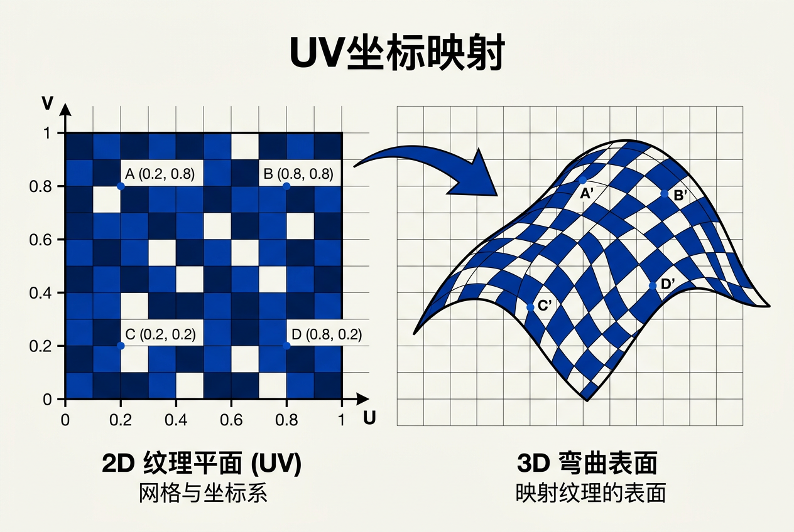
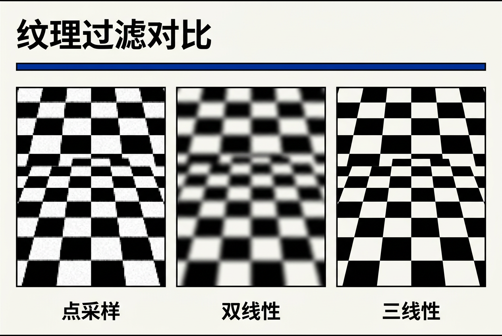
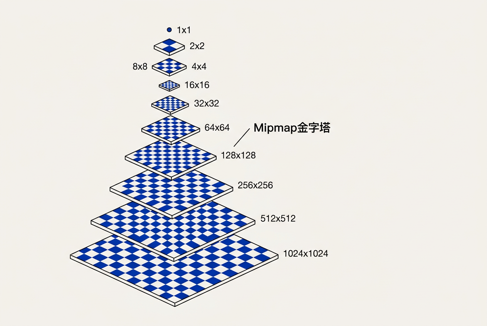
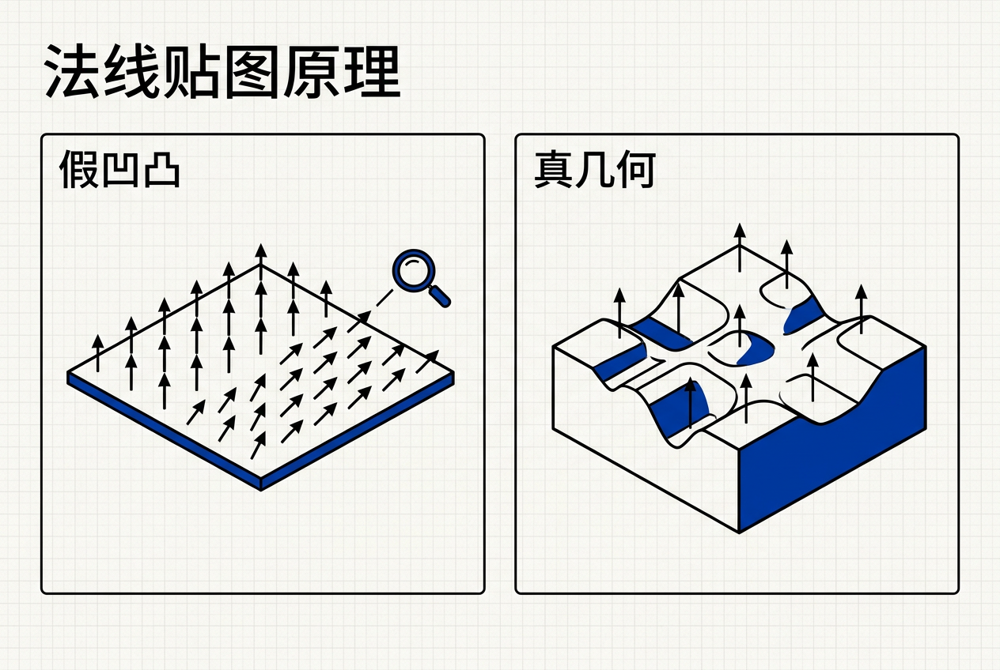

第11章：纹理映射 — 零基础讲义
讲义说明
本讲义基于 Steve Marschner & Peter Shirley 所著《虎书5》第5版第11章（p.255-290）。
本章是图形学的"皮肤"——它告诉你：怎么把一张 2D 图像"贴"到 3D 物体表面。
学完本章，你将真正理解 mipmap、立方体贴图、阴影贴图、Bump Map、过程纹理等核心概念。
本版插画采用 Guizang 材质插画风格重新绘制。
学习目标
- 理解纹理查找的"3 个空间"：物体/世界/相机/纹理空间的关系
- 掌握纹理坐标函数——怎么把 3D 点映射到 2D 纹理
- 掌握插值纹理坐标——三角形内部怎么插值
- 理解抗锯齿纹理查找——为什么纹理会出现锯齿
- 掌握mipmap——纹理的金字塔采样
- 理解各向异性过滤——为什么远处的地板要特别处理
- 掌握常见纹理应用：Bump/Normal Map、Displacement、Shadow、Environment
- 理解3D 过程纹理：noise、turbulence、stripe
11.0 本章动机：为什么需要纹理？
11.0.1 一切从"丑陋的色块"开始
想象你渲染了一个 3D 球。光照、阴影都对——但球的表面就是一个均匀的红色，没有任何细节。你永远不会相信这是一个"真实"的球。为什么会这样？因为现实世界的物体表面几乎都不是单一颜色——木头有纹路、布料有纤维、皮肤有毛孔、石头有凹凸。
最简单的解决办法是什么？
答：把一个高分辨率的 2D 图像（"纹理图"）"贴"到 3D 物体表面。这个过程就叫纹理映射（Texture Mapping）。
11.0.2 三个空间的"翻译游戏"
纹理映射本质上是一个翻译游戏——把 3D 世界坐标翻译成 2D 纹理坐标。这个翻译函数的名字叫 φ（phi）：

世界物体 S → 视图投影 π → 屏幕 → 纹理坐标函数 φ → 纹理 T
3D 点 (x,y,z) ───π───→ 屏幕像素 (i,j)
│
└──φ──→ 纹理坐标 (u,v) → 颜色 RGB| 符号 | 名称 | 含义 |
|---|---|---|
S | 场景物体 | 3D 世界中的几何体（球、人物、地面） |
π | 视图投影 | 把 3D 点投影到 2D 屏幕的相机变换（已知） |
φ | 纹理坐标函数 | 把 3D 点映射到 2D 纹理坐标的函数（待设计） |
T | 纹理 | 2D 图像（一堆像素，每个像素有颜色） |
π 是已知的（视图投影），φ 是待设计的（纹理坐标）。纹理映射的核心问题就是：怎么把表面点 (x, y, z) 映射到 (u, v)？
11.0.3 简单映射为什么不够用？
最笨的办法：直接把 3D 点的 x, y 当成纹理坐标 u, v。
// 简单映射
u = x
v = y这个方法在轴对齐的平面上能用，但只要物体倾斜一下，纹理就会"拉伸"——比如一面斜放的墙上，砖块都被拉成了平行四边形。弯曲表面就更没救了。
根本原因：简单映射只对"轴对齐的平面"有效。任意朝向的表面，需要更聪明的 φ 函数。
因为贴纸的格子是正方形的，但曲面（如球面）的"自然网格"是弯曲的。强行把方形格子贴到曲面上，就会有"拉伸"和"褶皱"。纹理映射本质上就是解决"如何把平的东西贴到曲的东西上"的数学问题。
11.1 查找纹理值
11.1.1 纹理查找的代码
假设我们已经知道表面点的纹理坐标 (u, v)，怎么从纹理图上取出对应的颜色？
// 最简单的纹理查找（不考虑抗锯齿）
function texture_lookup(Texture t, float u, float v):
// 把 [0,1] 的纹理坐标映射到像素索引
// 减 0.5 是因为像素中心位于 i+0.5
int i = round(u * t.width() - 0.5)
int j = round(v * t.height() - 0.5)
return t.get_pixel(i, j)| 符号 | 含义 |
|---|---|
u, v | 归一化的纹理坐标，范围通常 [0, 1] |
t.width(), t.height() | 纹理的像素分辨率（如 1024×1024） |
i, j | 像素的整数索引（从 0 开始） |
round(... - 0.5) | 四舍五入到最近的像素中心 |
get_pixel(i, j) | 取出该像素的颜色（RGB） |
u * W - 0.5，而不是 u * W？
因为像素是一个"区域"，不是"点"。像素 (i, j) 覆盖的范围是 [i, i+1) × [j, j+1)，中心位于 (i+0.5, j+0.5)。当 u=0 时，对应纹理图最左边一列像素的中心 (0.5/W)；当 u=1 时对应最右边一列像素的中心 (1-0.5/W)。减 0.5 保证这个对应关系正确。如果不减 0.5，u=0 会取到像素 (0, j) 的左边缘（而不是中心）。
11.1.2 这是"最近邻采样"——会有锯齿
上面这段代码就是点采样（Point Sampling），也叫最近邻采样（Nearest Neighbor）。它有两个致命问题：
- 锯齿（Aliasing）：远处的物体会出现明显的"马赛克"，因为一个像素只采了 1 个纹素（texel）
- 摩尔纹（Moiré Patterns）：当纹理的频率接近屏幕采样频率时，会出现奇怪的干涉条纹
为什么会有锯齿？ Ch10 已经讲过——采样率不足。当 1 个屏幕像素覆盖了多个纹素（远处物体）时，我们只取了 1 个纹素的值，丢掉了其他纹素的信息。这种"欠采样"是所有视觉锯齿的根源。
- texel（纹素）：纹理图像中的单个像素，区别于"屏幕像素"（pixel）
- 采样（sampling）：从连续函数中取出离散值
- 重建（reconstruction）：从离散样本恢复连续信号
11.2 纹理坐标函数
11.2.1 几何确定的坐标——φ 的 5 种实现
φ 函数的 5 种"现成"实现方式——每种都基于物体的几何形状：
方法 1：平面投影（Planar Projection）
适用：表面大致平面的物体（地板、墙、广告牌）。
// 把 3D 点直接当成 2D 坐标
φ(x, y, z) = (u, v) where [u, v, *, 1]ᵀ = M_t · [x, y, z, 1]ᵀ方法 2：投影纹理（Projective Texture）
核心思想：用 4×4 矩阵（投影矩阵）做透视投影——和相机投影场景的原理完全一样！
// 4×4 投影矩阵
φ(x, y, z) = (u/w, v/w) where [u, v, *, w]ᵀ = P_t · [x, y, z, 1]ᵀ应用：投影纹理（projector）、阴影贴图（shadow map）。
| 场景 | 用途 |
|---|---|
| 投影仪 | 把一张图"投影"到任何表面上 |
| 阴影贴图 | 从光源视角"看"场景，记录深度 |
| 环境光照 | 从某点"看"环境贴图，模拟间接光 |
方法 3：球面坐标（Spherical Coordinates）
适用：球形 / 近球形物体（地球仪、星球、灯泡）。
// 把 3D 点转换成 (经度, 纬度)
φ(x, y, z) = ((π + atan2(y, x)) / 2π, // u = 经度 [0,1]
(π - acos(z / ||x||)) / π) // v = 纬度 [0,1]| 符号 | 含义 |
|---|---|
atan2(y, x) | 点 (x,y) 的极角（范围 [-π, π]） |
acos(z / ||x||) | 从 z 轴算起的极角（范围 [0, π]） |
||x|| | 向量长度 sqrt(x² + y² + z²) |
方法 4：圆柱坐标（Cylindrical Coordinates）
适用：柱形物体（杯子、树干、铅笔）。
φ(x, y, z) = ((1 / 2π) · (π + atan2(y, x)), // u = 角度 [0,1]
½ · [1 + z]) // v = 高度 [0,1]圆柱坐标和球面坐标很像，但 v 方向直接用 z（线性），不会有极点失真问题。
方法 5：立方体贴图（Cubemap）
适用：环境光照、反射（最常用）。
核心思想：用 6 个正方形纹理分别对应立方体的 6 个面。查找时，根据光线方向判断用哪个面：
// 6 个面的投影
φ_±x(x, y, z) = ½ [1 ± (-y, -z) / |x|]
φ_±y(x, y, z) = ½ [1 ± (x, -z) / |y|]
φ_±z(x, y, z) = ½ [1 ± (x, -y) / |z|]
// 选择 |·| 最大的那一面
chosen_face = argmax(|x|, |y|, |z|)11.2.2 插值纹理坐标（最常用的方法）
对于复杂的任意形状物体（如恐龙模型），几何方法难以构造纹理坐标。怎么办？
答案：在顶点存储纹理坐标，三角形内部用重心插值。这就是 OpenGL/UE/Unreal 的标准做法。
// 三角形三个顶点 (u₀, v₀), (u₁, v₁), (u₂, v₂)
// 内部点 (α, β, γ) 的纹理坐标
u = α · u₀ + β · u₁ + γ · u₂
v = α · v₀ + β · v₁ + γ · v₂
// 其中 α + β + γ = 1，且都 ≥ 0| 符号 | 含义 |
|---|---|
(u₀, v₀), (u₁, v₁), (u₂, v₂) | 三个顶点的纹理坐标（顶点属性） |
α, β, γ | 重心坐标（决定内部点位置） |
α + β + γ = 1 | 重心坐标的归一化条件 |
想象你在贴地砖。每块地砖的"位置"就是 (u, v) 坐标——左下角是 (0,0)，右上角是 (1,1)。当你知道地砖的四个角落在房间的什么位置时，房间内任何一点的地砖颜色都可以通过插值算出来。
重心插值 = "我离这个角 30%，离那个角 50%，离第三个角 20%，所以颜色 = 30%×角1 + 50%×角2 + 20%×角3"。
11.2.3 UV 展开：把 3D 摊成 2D
对于任意形状的 3D 物体，怎么决定每个顶点的 UV 坐标？这就是 UV 展开（UV Unwrapping）——把 3D 表面"剪开"成 2D 平面。
例子：20 面体（Icosahedron）的 UV 展开
- 优点：失真为零（每个三角形大小相同）
- 缺点：接缝多（每个三角形都要接到下一行）
UV 展开品质的 3 个评估指标：
| 指标 | 含义 |
|---|---|
| 连续性（continuity） | 相邻三角形共享 UV → 自动满足 |
| 单射性（injectivity） | UV 区域内不重叠（无"自交"） |
| 失真最小 | 3D 和 2D 三角形面积/形状比例接近 1 |
11.2.4 平铺、包裹和纹理变换
3 种 wrap mode（包裹模式）：
| 模式 | 行为 | 应用 |
|---|---|---|
| Tiling（平铺） | 超出 [0,1] 后取模（重复） | 棋盘、墙砖、地面 |
| Clamping（钳制） | 超出 [0,1] 后固定为 0 或 1 | 单一图像（贴 logo） |
| Hybrid（混合） | 边缘 wrap + 内部 tile | 棋盘的边框 |
纹理变换：在原 UV 上叠加 2D 仿射变换
φ'(x) = M_T · φ_model(x)
其中 M_T 是一个 3×3 矩阵：
| cosθ -sinθ tx |
| sinθ cosθ ty |
| 0 0 1 |M_T 是一个 3×3 矩阵（2D 仿射变换），让你可以动态调整 UV 而不改原模型。在游戏里这非常常用——比如水面纹理流动、UI 动画。
11.3 抗锯齿纹理查找
11.3.1 像素的"足迹"（Footprint）
抗锯齿的核心思想：不要只采 1 个纹素，要采一片纹素并加权平均。这一片纹素就叫像素的"足迹"（footprint）。

关键问题：不同位置的像素，对应的纹理区域大小和形状都不同！
| 位置 | 足迹大小 | 形状 |
|---|---|---|
| 近处物体 | 小（只覆盖少量 texel） | 近似正方形 |
| 远处物体 | 大（覆盖很多 texel） | 近似正方形 |
| 斜视的地面/墙壁 | 大 | 长条形 |
足迹的数学表达：
ψ = φ ∘ π⁻¹ // 把屏幕坐标映射回纹理坐标
footprint(x) = ψ(像素面积) // 像素的 1×1 正方形 → 纹理的某个区域11.3.2 足迹的线性近似（Jacobian 矩阵）
用 Jacobian 矩阵 J 近似足迹：
J = [ ∂u/∂x ∂u/∂y ]
[ ∂v/∂x ∂v/∂y ]几何意义：单位像素面积 → J 决定的平行四边形（足迹）
filter 宽度 D：
| 符号 | 含义 |
|---|---|
u_x, u_y | J 的两列向量（足迹的两个主方向） |
||·|| | 向量的长度 |
D | 足迹的"直径"——需要采样的纹素数 |
11.3.3 重建（Reconstruction）——放大情况
当足迹 < 1 个 texel（放大）：
重建 = 插值 = 卷积 with reconstruction filter。最常用：双线性插值（4 个 texel 加权平均）
def tex_sample_bilinear(Texture t, float u, float v):
# 1. 把 [0,1] 纹理坐标缩放到像素坐标
u_p = u * t.width - 0.5
v_p = v * t.height - 0.5
# 2. 找到周围 4 个像素
iu0 = floor(u_p); iu1 = iu0 + 1 # 左、右
iv0 = floor(v_p); iv1 = iv0 + 1 # 下、上
# 3. 计算权重（距离 4 个像素的距离）
a_u = iu1 - u_p; b_u = 1 - a_u # 水平权重
a_v = iv1 - v_p; b_v = 1 - a_v # 垂直权重
# 4. 加权平均 4 个 texel
return a_u * a_v * t[iu0][iv0] # 左下 \
+ a_u * b_v * t[iu0][iv1] # 左上 \
+ b_u * a_v * t[iu1][iv0] # 右下 \
+ b_u * b_v * t[iu1][iv1] # 右上| 变量 | 含义 |
|---|---|
u_p, v_p | 像素空间的浮点坐标 |
iu0, iu1 | 左、右两个像素索引（整数） |
a_u, b_u | 对左、右两个像素的权重（距离反比） |
a_u + b_u = 1 | 权重和为 1（凸组合） |
11.3.4 Mipmap —— 缩小情况
问题：当足迹 > 1 个 texel 时（缩小），直接采样会锯齿/混叠。
Mipmap 解决方案 = 预计算的多分辨率纹理。每层都是上一层的 1/2 缩放。

M0: 1024×1024 (原图)
M1: 512×512 (1/2)
M2: 256×256
M3: 128×128
...
M10: 1×1Mipmap 的 3 大优势：
- 内存可控：多 33% 内存（1 + 1/4 + 1/16 + ... < 4/3）
- 采样时根据足迹大小选择层：自动适配远近物体
- 抗锯齿效果立竿见影：比点采样好 10 倍
Mipmap 层选择公式：
k0 = floor(k); k1 = k0 + 1
# 在两层间线性插值（trilinear 过滤）
result = a · M[k0] + b · M[k1]| 参数 | 含义 |
|---|---|
D | filter 宽度（足迹直径） |
k | 目标 mipmap 层级（连续值） |
k0, k1 | 夹住 k 的两个整数层 |
a, b | 两层间的插值权重，a + b = 1 |
几何级数：1 + 1/4 + 1/16 + 1/64 + ... = 1 / (1 - 1/4) = 4/3。也就是原图内存的 1.33 倍。这是 Mipmap 在内存上"经济"的数学原因。
11.3.5 各向异性过滤
问题：当足迹是长条形（如远处的地面），mipmap 会过度模糊。
原因：mipmap 只考虑方形区域。对于长条形足迹，它只能选一个"最坏"的方形 mip 层，结果是垂直方向模糊、水平方向也模糊——但我们其实只想要垂直方向模糊。
各向异性过滤 = 沿长条形方向多次采样
# 各向异性过滤伪代码
# 1. 计算足迹的长宽比
λ = max(||u_x||, ||u_y||) / min(||u_x||, ||u_y||)
# 2. 沿长边方向采 N 次（向上取整到 1, 2, 4, 8, 16）
N = clamp(round(λ), 1, 16)
# 3. 在长条形上等距采 N 个样本并平均
color = 0
for i in 0..N-1:
t = (i + 0.5) / N
pos = center + t * (long_axis)
color += sample_mipmap(pos)
return color / N| 质量 | 样本数 | 适用 |
|---|---|---|
| point | 1 | 最差，1 个纹素 |
| bilinear | 4 | 基本无锯齿 |
| trilinear | 8（2 层 × 4 像素） | 远近过渡平滑 |
| anisotropic 2x | 2 × 4 = 8 | 地面/墙面的标准 |
| anisotropic 16x | 16 × 4 = 64 | 极限质量 |
point < bilinear < trilinear < anisotropic。质量越好，代价是采样数增加。现代游戏一般开 4x~8x 各向异性。
11.4 纹理映射的应用
11.4.1 控制着色参数
纹理不只能控制漫反射颜色——它能控制几乎任何着色参数：
| 用途 | 纹理内容 | 图11.x |
|---|---|---|
| 漫反射颜色 | 砖墙、木纹、布料图案 | 图11.18 |
| 镜面反射率 | 抛光区（白色=高光，黑色=粗糙） | 图11.20 |
| 粗糙度 | 磨砂区 | — |
| 环境贴图 | 模拟天空/灯光 | 图11.32 |
| 凹凸/法线 | 表面细节（不真改几何） | 图11.24 |
| 位移 | 真凹凸（改顶点） | 图11.25 |
| 阴影 | 光源视角的深度图 | 图11.27 |
例子：图11.20 陶瓷马克杯的镜面粗糙度由反相的漫反射纹理控制——白色部分代表高光，黑色部分代表粗糙。这种"用一个纹理的不同颜色通道"的做法在游戏里非常常见。
11.4.2 法线贴图和凹凸贴图
法线贴图 = 存储 3D 法线（扰动后的）。

为什么需要法线贴图？
直接在着色时改 normal = 看起来像有凹凸。比真实几何便宜 1000 倍。一块砖墙的法线贴图只需要 4 KB，但 1 千万个真实的砖头三角形要 1 GB。
凹凸贴图（Bump Map） = 高度场（1D 标量）
从高度场到法线的推导：
∂h/∂x → 沿 x 方向的斜率
∂h/∂y → 沿 y 方向的斜率
扰动后的法线:
n_perturbed = n + (-∂h/∂x) · t + (-∂h/∂y) · b
其中 t 和 b 是切线空间基向量（TBN 矩阵）| 符号 | 含义 |
|---|---|
h(x, y) | 高度场（凹凸贴图） |
∂h/∂x, ∂h/∂y | 沿两个切线方向的斜率 |
n | 原始法线（未扰动） |
t, b | 切线空间的两个基向量（tangent, bitangent） |
n_perturbed | 扰动后的法线 |
切线空间（TBN 矩阵）：
- 存储在切线空间（相对表面）而非世界空间
- 原因：法线贴图需要随物体表面"一起动"
- 需要切线向量（T, B, N）
11.4.3 位移贴图（Displacement Maps）——真凹凸
真凹凸 = 移动顶点位置：
vertex.position += h(uv) · normal优点：
- 边缘和轮廓都正确（不是平面）
- 能做自阴影（凹凸贴图做不到）
- 光线交互是真实的
缺点：
- 需要高密度网格（否则形变不够）
- 内存和计算成本高
- 不适合实时渲染（常用在离线渲染）
实时（游戏）→ 法线贴图。物体不需要太复杂的几何细节，但表面光照要"看起来"对。离线（电影）→ 位移贴图。物体边缘的轮廓必须真实，即使需要几亿三角形。
11.4.4 阴影贴图（Shadow Maps）
核心思想：从光源视角渲染一次深度图。
# Pass 1: 从光源看
shadow_map[每个像素] = 最近表面的深度
# Pass 2: 从相机看
for each fragment:
# 1. 把 fragment 投影到光源的"屏幕"
light_space_pos = light_proj × fragment_pos
# 2. 查 shadow_map
closest = shadow_map[light_space_pos]
# 3. 比较
if fragment.depth > closest + bias:
in_shadow = True| 参数 | 含义 |
|---|---|
light_proj | 光源的视图-投影矩阵（和相机类似） |
light_space_pos | fragment 在光源"屏幕"上的位置 |
closest | shadow_map 在该位置记录的最近深度 |
bias | 阴影偏移（避免自影） |
关键技术点：
- shadow bias：避免自影（self-shadowing）
- percentage closer filtering (PCF)：多次采样平均，让阴影边缘更柔和
- shadow acne：bias 不够大会出现斑点
💡 实战：UE / Unity 的实时光照基本都是用 shadow map（加 PCF）。
11.4.5 环境贴图（Environment Maps）
问题：漫反射光来自所有方向——不能用点光源或面光源近似。
环境贴图 = 整个 360° 颜色图
2 种表示：
| 类型 | 存储 | 优点 | 缺点 |
|---|---|---|---|
| 球面贴图（Spherical） | 6 个面展开成"十字"形 | 连续 | 极点失真 |
| 立方体贴图（Cubemap） | 6 个正方形 | 无失真 | 需要 6 张图 |
应用：
- 反射贴图（Reflection Mapping）：镜面反射
- 环境光照（Environment Lighting）：漫反射光
# 反射贴图伪代码
def shade_fragment(view_dir, normal):
reflect = reflect(view_dir, normal)
(u, v) = spheremap_coords(reflect)
return texture_lookup(env_map, u, v)11.5 过程化 3D 纹理
11.5.1 为什么需要 3D 纹理？
2D 纹理的限制：
- 必须有 UV 参数化（很多时候很复杂）
- 有接缝和失真
- 不能"雕刻"立体感
3D 纹理 = 在 3D 空间定义的纹理
关键优势：直接在 3D 坐标取样——不需要 UV！把一个 3D 纹理函数 f(x, y, z) 想象成一个"无限延伸的纹理云"，无论你的表面在哪里，都直接用世界坐标取样。
11.5.2 3D 条纹
最简单的 3D 纹理 = 周期性切换两种颜色：
def RGB_stripe(point p):
if sin(x_p) > 0:
return c0 # 第一种颜色
else:
return c1 # 第二种颜色可控宽度：
def RGB_stripe(point p, real w):
if sin(π · x_p / w) > 0:
return c0
else:
return c1其中 w 控制条纹的"宽度"——w 越大，条纹越宽。
11.5.3 Perlin 噪声——"平滑的随机"
什么是"平滑噪声"？
| 特性 | 描述 |
|---|---|
| 在每个点是伪随机的 | 看起来杂乱无章 |
| 但相邻点相似（不跳跃） | 看起来"自然" |
| 类似 TV static 但更平滑 | 有"质感" |
Perlin 噪声的实现：
- 3D 网格，每个格点有随机梯度
- 用 Hermite 三次插值（不是线性）
# Perlin 噪声数学公式
n(x, y, z) = Σᵢ Σⱼ Σₖ ω(x-i, y-j, z-k) · Γᵢⱼₖ
其中：
ω(t) = 2|t|³ - 3|t|² + 1 # Hermite 三次权重
Γᵢⱼₖ = 预计算的随机单位向量| 符号 | 含义 |
|---|---|
ω(t) | Hermite 三次权重函数（保证 C¹ 连续） |
Γᵢⱼₖ | 网格点 (i, j, k) 的随机单位梯度向量 |
n(x, y, z) | Perlin 噪声函数值（通常 [-1, 1]） |
应用：
- 石头、木纹、云、皮肤
- modular noise = 同一函数，不同参数
11.5.4 湍流（Turbulence）——多个频率的噪声叠加
湍流 = 多个频率的噪声叠加
# 湍流公式
n_t(x) = Σ |n(2ⁱ · x)| / 2ⁱ
i 从 0 到 N（典型 N = 6 ~ 8）| 符号 | 含义 |
|---|---|
2ⁱ · x | 第 i 层频率翻倍（2×, 4×, 8×, ...） |
|n(...)| | 取绝对值（避免负值抵消） |
1 / 2ⁱ | 每层的权重（高频贡献小） |
n_t(x) | 叠加后的湍流值 |
为什么用湍流？
单个 noise 太"平滑"（像鹅卵石）。湍流有"分形"感（细节无处不在）——像云、烟、火焰这种自然现象。原因是它把多个尺度的细节叠加起来：从大轮廓到小细节都有。
应用：云、烟、火焰、地形
Turbstripe 例子：
def RGB_turbstripe(point p, double w):
double t = (1 + sin(k1 · z_p + turbulence(k2 · p))) / w
return t · s0 + (1-t) · s1把湍流作为正弦函数的相位扰动——条纹变得"扭曲"，模拟自然纹理（如大理石、木纹）。
想象你在画一朵云。如果你只画一个大圆形，它会显得很"卡通"（像 Photoshop 的圆）。如果你先画几个大圆形作为云的"骨架"，再在每个大圆形上画几个中圆形，最后在每个中圆形上画几个小圆点——这种"层层叠叠"就是湍流的思路。每一层都是噪声，但频率不同，叠加后才有"云"的质感。
全章总结
讲义核心洞察：纹理映射是图形学的"皮肤"——
- 3 个空间：物体/世界/相机/纹理空间，φ 函数是核心
- 纹理坐标函数：平面/球面/圆柱/立方体/插值 UV
- 抗锯齿：足迹（footprint）→ mipmap → 各向异性
- 应用：Bump/Normal/Displacement/Shadow/Environment
- 3D 纹理：noise、turbulence、stripe
| 主题 | 核心公式/方法 | 关键洞察 |
|---|---|---|
| 纹理查找 | t.get_pixel(round(u*W - 0.5), round(v*H - 0.5)) | 中心点采样，减 0.5 校正 |
| 几何 φ | 平面 / 球面 / 圆柱 / 立方体 | 各有限制，闭合物体不单射 |
| 重心插值 | u = α·u₀ + β·u₁ + γ·u₂ | 三角形内任意点的纹理坐标 |
| 双线性插值 | 4 texel 加权平均 | 放大情况的标准方案 |
| Mipmap 层 | k = log₂(D) | 33% 内存换抗锯齿 |
| 各向异性 | 沿长边多次采样 | 长条形足迹的最佳方案 |
| Bump 法线 | n' = n + (-∂h/∂x)t + (-∂h/∂y)b | 假凹凸，边缘还是平面 |
| 阴影判定 | if (d > shadow_map[uv] + bias) 阴影 | shadow bias 避免自影 |
| Turbulence | n_t(x) = Σ |n(2ⁱ x)| / 2ⁱ | 多个频率的噪声叠加 |
- φ (phi)：纹理坐标函数，3D → 2D 的映射
- Texel：纹素（纹理图像中的单个像素）
- Footprint：足迹（屏幕像素覆盖的纹理区域）
- Mipmap：多分辨率纹理金字塔
- Trilinear：在两层 mipmap 间线性插值
- Anisotropic：各向异性过滤（针对长条形足迹）
- TBN：切线空间基向量（Tangent, Bitangent, Normal）
- Perlin Noise：伪随机但平滑的噪声函数
- Turbulence：多频率噪声叠加
一句话总结：纹理映射 = 用 φ 函数把 3D 表面点映射到 2D 纹理 → 抗锯齿采样（双线性 + mipmap + 各向异性）→ 应用于漫反射/法线/位移/阴影/环境光 → 高级用 3D 过程纹理（noise + turbulence）。
下一步：第 12 章将讲解图形学的数据结构——mesh 怎么存？空间查询怎么做？这是所有游戏引擎的基础。